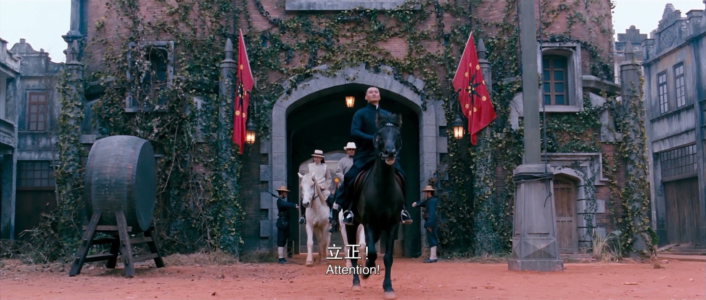

- 正在读取。
Archived
— 项收尾
In Progress
— 项进行中
Experiment Atlas
— / — 张母图
Generated
— 张结果
Research Records
— 份文档
Research Updated
—
Experiment Atlas / 14 Frames
先看完整母图，再判断实验做到哪一步
正在读取公开边界。
正在读取实验图谱。
Current Experiment
正在读取当前实验
读取中
正在读取实验判断。
正在读取本轮变量。
实验假设
正在读取。

正在读取 A/B/C 对比。
- 正在读取。
- 正在读取。
Decision Layer
现在知道什么，还不知道什么
下一步：正在读取。
视觉校准必须可追溯
每次只改变有限变量，保留 Prompt、结果、评价与失败，才能判断画面变化来自哪里。
电影感不是一个滤镜
人物关系、空间层级、肤色、中间调和背景叙事共同决定可信度，单独追求颗粒或色调不会成立。
— 张母图待排期
完整图谱不等于全部完成。未测试项目只展示母图、来源边界和下一步，不补造实验结果。
Research Records
研究记录
四份记录对应四个实验编号。点击任一条，会定位到下方完整 PDF 阅读器。
正在读取研究记录。
DOCUMENT READER
完整实验文档
LOADING
正在读取实验文档。